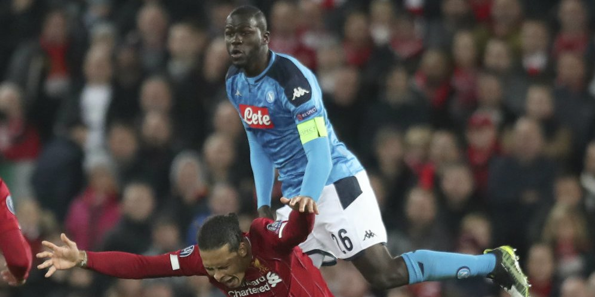
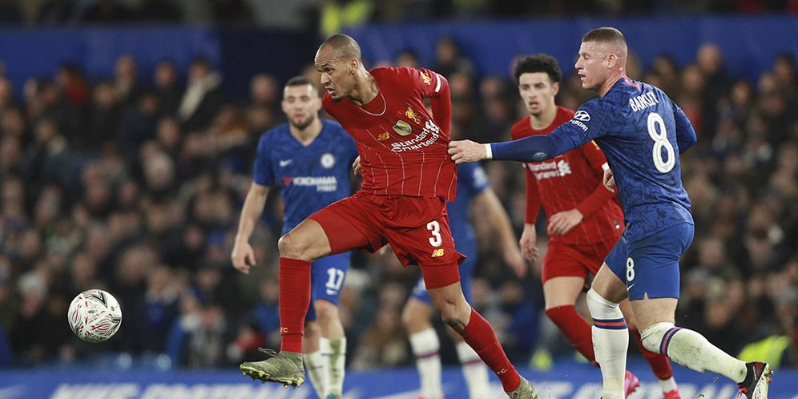
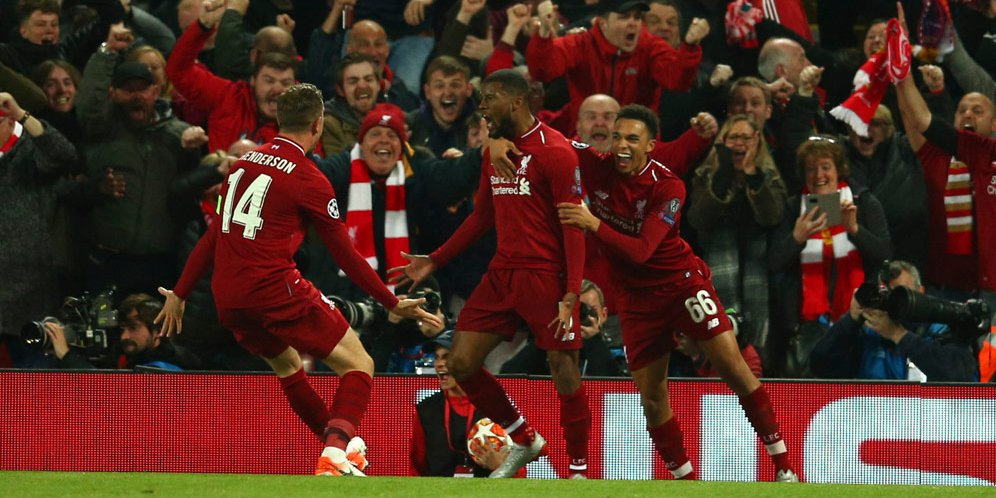

SUDAH 80% RESMI KE LIVERPOOL??!!!
Pemain RB Leipzig, Timo Werner, menjadi bidikan menjadi bidikan beberapa klub raksasa Premier League. Bagi klub peminat baru-baru ini ada kabar gembira. Nilai jual striker haus gol Timo Werner pada jendela transfer musim panas ini diyakini bisa mengalami penurunan. La Gazzetta dello Sport, Kamis (7/4/2020), menyebut nilai klausul Timo Werner bisa turun sebesar 10 juta euro menjadi 50 juta euro jika Leipzig gagal menjuarai Bundesliga musim ini. Read more. . .

Sebuah kabar gembira datang bagi Liverpool. Bek incaran mereka, Kalidou Koulibaly diberitakan tertarik pindah ke Anfield musim depan. Koulibaly selalu menjadi properti panas di bursa transfer. Pasalnya bek asal Senegal itu selalu menunjukkan performa yang impresif di lini pertahanan Napoli dalam empat tahun terakhir. Read more. . .
Kalidou Koulibaly Buka Pintu Pindah ke Liverpool
Sebuah kabar gembira datang bagi Liverpool. Bek incaran mereka, Kalidou Koulibaly diberitakan tertarik pindah ke Anfield musim depan. Koulibaly selalu menjadi properti panas di bursa transfer. Pasalnya bek asal Senegal itu selalu menunjukkan performa yang impresif di lini pertahanan Napoli dalam empat tahun terakhir. Read more. . .

Klub-klubPremier League nampaknya begitu serius dalam persiapan melanjutkan kompetisi yang sempat terhenti. Kabarnya, klub liga Inggris sampai menyiapkan sebuah aplikasi untuk menghadirkan atmosfer suporter di dalam stadion yang bakal ditutup selama pertandingan. Kompetisi teratas di Inggris tersebut telah terhenti sejak 13 Maret lalu. Read more . . .
Siap Lanjutkan Kompetisi, Klub Premier League Siapkan Aplikasi Yel-Yel Suporter
Klub-klubPremier League nampaknya begitu serius dalam persiapan melanjutkan kompetisi yang sempat terhenti. Kabarnya, klub liga Inggris sampai menyiapkan sebuah aplikasi untuk menghadirkan atmosfer suporter di dalam stadion yang bakal ditutup selama pertandingan. Kompetisi teratas di Inggris tersebut telah terhenti sejak 13 Maret lalu. Read more . . .

Liverpool meraih gelar Liga Champions mereka yang keenam musim 2018/19 lalu. Namun, langkah mereka menuju ke sana tak sepenuhnya mulus. Salah satu rintangan terberat dihadapi Liverpool di babak semifinal. Pasukan Jurgen Klopp nyaris tersingkir oleh Barcelona. Mereka tumbang 0-3 oleh satu gol Luis Suarez dan dua gol Lionel Messi di Camp Nou pada leg pertama. Read More . . .
Hari Ini di Anfield Setahun Lalu, Liverpool 4-0 Barcelona
Liverpool meraih gelar Liga Champions mereka yang keenam musim 2018/19 lalu. Namun, langkah mereka menuju ke sana tak sepenuhnya mulus. Salah satu rintangan terberat dihadapi Liverpool di babak semifinal. Pasukan Jurgen Klopp nyaris tersingkir oleh Barcelona. Mereka tumbang 0-3 oleh satu gol Luis Suarez dan dua gol Lionel Messi di Camp Nou pada leg pertama. Read More . . .
Copyright 2020 ©

 081907684932
081907684932